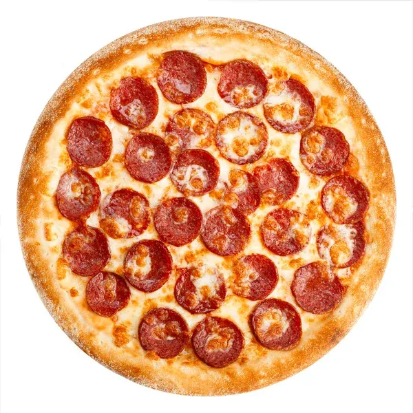

Home

Description
Ingredients:
Contadina Quick Pizza Sauce:
- ½ cup water
- ½ (12 ounce) can CONTADINA Tomato Paste
- 1 teaspoon dried oregano, crushed
teaspoon dried basil, crushed
- ½ teaspoon garlic powder
- ½ teaspoon onion powder
- ½ teaspoon sugar
- ½ teaspoon salt
- ¼ teaspoon black pepper
Fleischmann's Easy Pizza Crust:
- 3 ¼ cups all-purpose flour, or more as needed
- 2 (.25 ounce) envelopes FLEISCHMANN'S Pizza Crust Yeast or RapidRise Yeast
- 1 tablespoon sugar
- 1 ½ teaspoons salt
- 1 ⅓ cups very warm water (120 degrees F to 130 degrees F)
- ⅓ cup oil
Toppings:
- 1 cup shredded mozzarella cheese, or more to taste
- 1 (6 ounce) package HORMEL Pepperoni